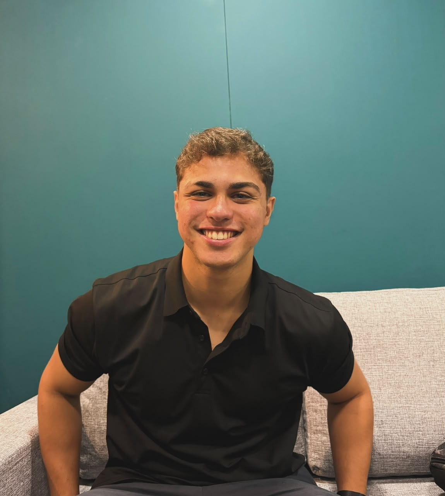
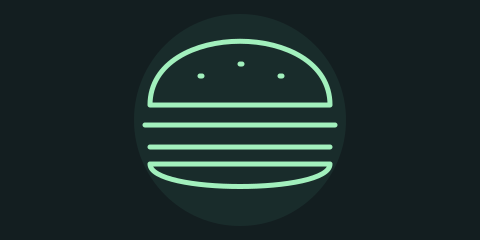

01
Programação
Gosto de transformar ideias em soluções e aprender novas formas de resolver problemas.
UM POUCO SOBRE MIM
Sou estudante de Ciência da Computação e gosto de descobrir como as coisas de fato funcionam. Entre códigos, esportes, bons filmes e música, estou sempre buscando aprender algo novo e viver cada experiência de forma única.
Conheça meus interesses ↓
FORA E DENTRO DAS TELAS
Seis interesses que deixam meus dias mais interessantes.
Gosto de transformar ideias em soluções e aprender novas formas de resolver problemas.

Conhecer sabores e compartilhar uma boa refeição são momentos que eu valorizo.
Gosto da emoção das partidas e de como o futebol aproxima as pessoas.
Correr é uma maneira de me movimentar, superar desafios e renovar as energias.
Gosto de acompanhar boas histórias e conhecer diferentes perspectivas através do cinema.
A música acompanha diferentes momentos do meu dia e combina com cada estado de espírito.